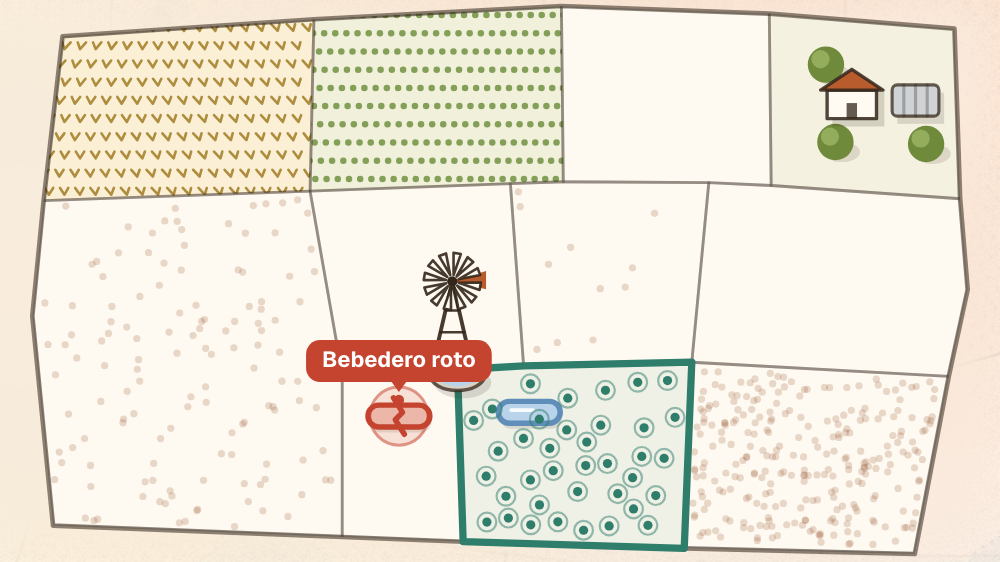

Entrás con un código por WhatsApp
Tu campo,
donde estés
.
La hacienda, los potreros y la plata, con
lo que tu gente manda por WhatsApp
.

Encargado
Se rompió el bebedero del 7B. Pasé las vacas al 8B.